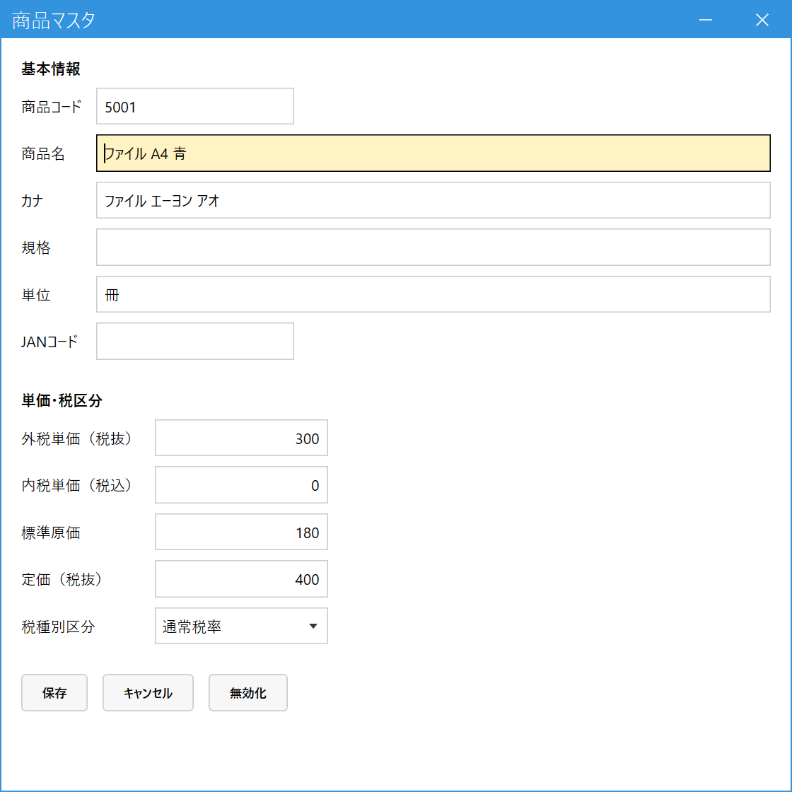

Register a Product (Product Master / 商品マスタ)
When to use this
Use this screen when you start handling a new product, when you correct a unit price or name, or when you want to stop using a product you no longer carry.
Only products registered here can be entered on order and sales lines.
Use this screen when you start handling a new product, when you correct a unit price or name, or when you want to stop using a product you no longer carry.
Only products registered here can be entered on order and sales lines.
1.Open the screen and enter a product code
In the main menu, open Master Management (マスタ管理), then open Product Master (商品マスタ).
- To register a new product: Enter a new code in the Product Code (商品コード) field and press Enter. The message "未登録です。新規登録として入力してください" (Not registered. Please enter as a new registration) appears. Just keep entering the details.
- To edit an existing product: Enter the code and press Enter, or press Space to search and select.
2.Enter the fields

- Product code (商品コード): Required. This is a code you decide in-house (it is not the JAN code).
- Product name, kana, specification, unit (商品名・カナ・規格・単位): The product name is required. It is printed on lines and delivery notes. The kana and specification are used for searching.
- JAN code (JANコード): Optional (the barcode number). You can use it for searching.
- Unit price, tax-exclusive / Unit price, tax-inclusive (外税単価（税抜）／内税単価（税込）): The standard selling prices. When you add the product to a line, the price is filled in automatically to match the customer's transaction method: the tax-exclusive price for tax-exclusive customers, and the tax-inclusive price for tax-inclusive, per-line customers (per-transaction customers). You can overwrite it later on the line.
- Standard cost, list price (excl. tax) (標準原価・定価（税抜）): The cost is used to calculate gross profit. The list price is the basis when you set a customer-specific price as "x% of list price" (rate).
- Tax type (税種別区分): One of standard rate / reduced rate / tax-exempt. It determines the tax rate that applies on the date you enter the sale.
- Press Save (保存) to register. To stop, press Cancel (キャンセル). For a product you no longer carry, press Deactivate (無効化) (past slips are kept).
If you want a different price for only certain customers, use the menu Master Management (マスタ管理) → Customer/Product Price & Rate Master (得意先／商品／単価・掛率マスタ) to register a price (or a rate against the list price) for each customer and product. When you add a product to a line, this customer-specific setting takes priority.